October 3, 2014
| We were invited by the BCM (Baptist Collegiate
Ministries) to join in an event for international students at the Express
Temporary Services Clydesdale barn. The night included an up-close
look at the horses, a wagon ride, a cookout, and fun around the
campfire. It was a great evening. |
|
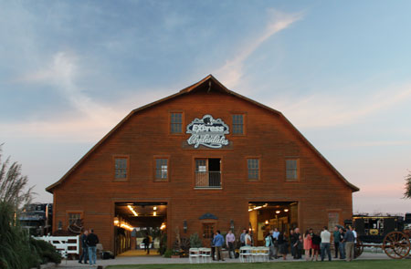 The Express Temporary Services Clydesdales perform at many events in the OKC area and beyond. |
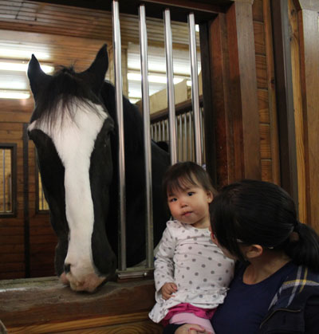 |
| Isabel became shy with such a big horse - they are HUGE! | |
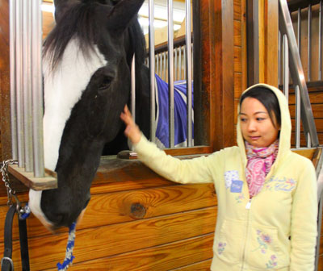 Jade, looking a little dubious about getting so close |
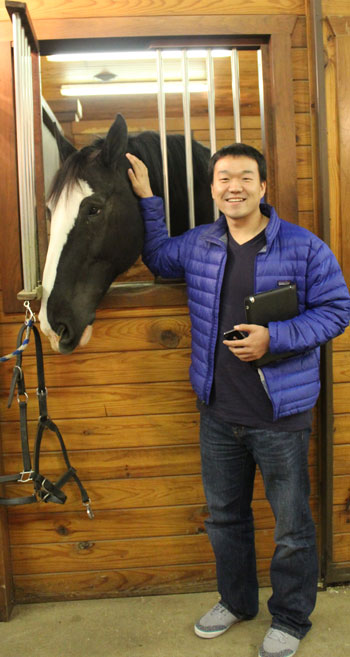 |
| Isaac is all smiles, as always! | |
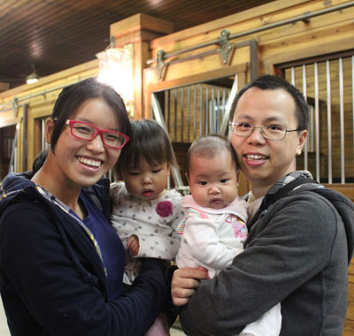 |
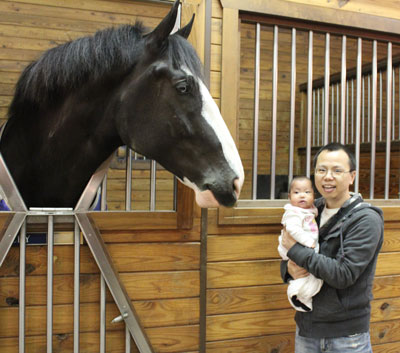 |
| Jiayi, Isabel, Melody, and Wei - what a beautiful family | This gives a nice scale to show how big the horses really are. |
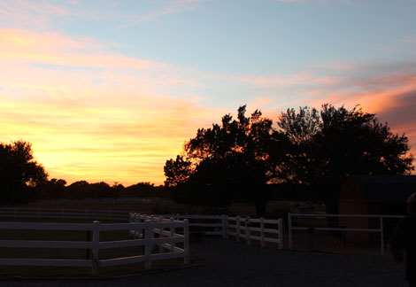 |
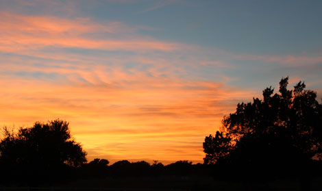 |
|
Two views of the beautiful sunset we saw that evening - God pitched in to make the night even more special than it already was! |
|
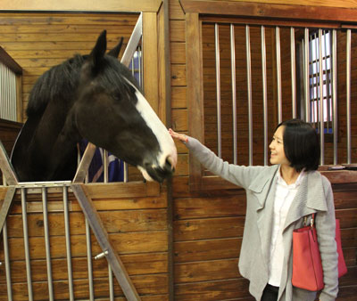 Rachel making friends |
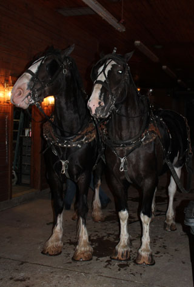 |
| Two of the horses all rigged up for our wagon ride | |
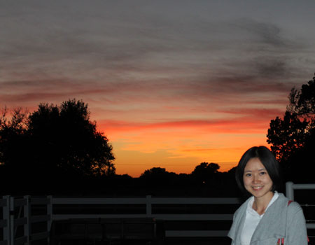 Lovely Rachel with the lovely sunset |
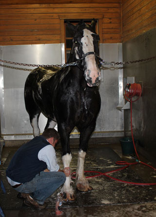 |
| Bath time! They seemed to like it. | |